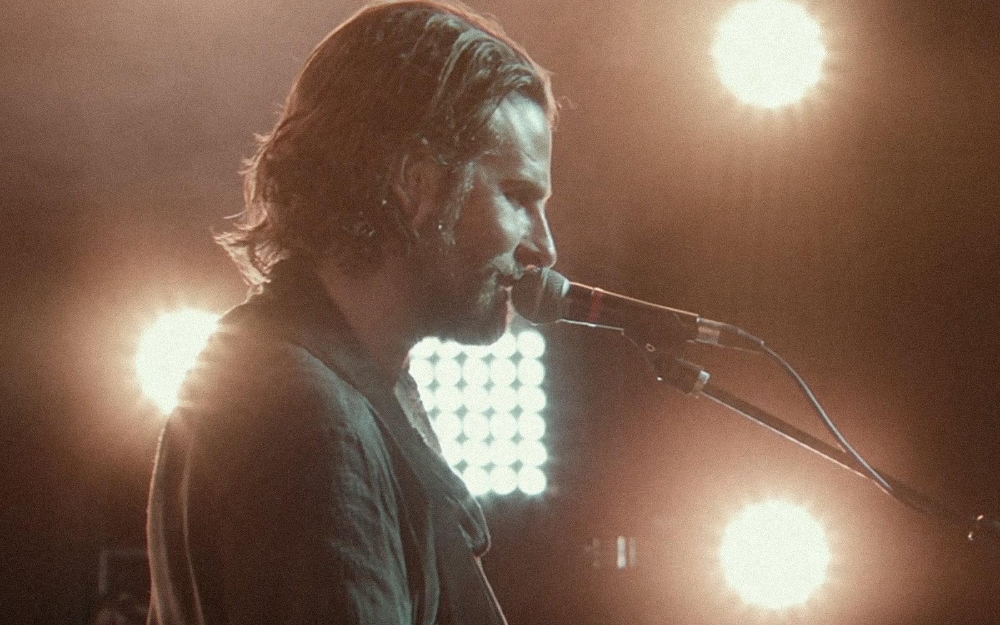
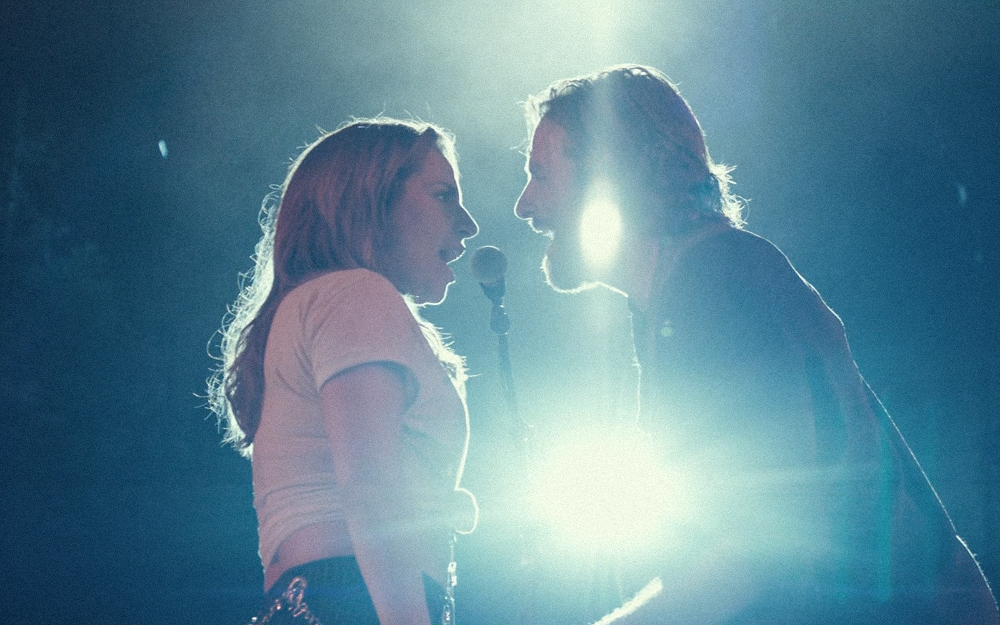
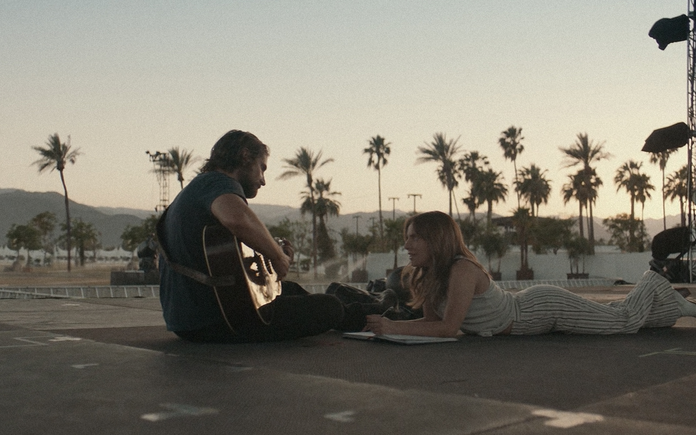

처음 잭슨이 앨리를 보게 된 그 드랙 바에서, 즉석으로 불렀던 잭슨의 노래. 어쩌면 자기 이야기를 하는듯한 노랫말이 더 구슬프게 느껴진다. 잭슨은 누구나 알아보는 스타였지만 앨리의 모습에 첫눈에 매료되어 주변의 시선은 아랑곳 않은 채 앨리의 손을 붙잡고 자리를 옮긴다. 시끄럽지만 둘만의 시간이 조용히 멈춰있는 한 바에서 사랑에 빠진 듯 앨리를 바라보며 그녀의 코를 가만히 만져보는 '잭슨', 그리고 그런 그를 쳐다보는 '앨리'. 아마도 두 사람은 이미 그때부터 서로에게 이끌렸을 것이다.

Shallow
Shallow
"나는 빠져들어. 행복했던 시간 속으로, 변화를 바라며"
이름과 얼굴이 알려진 가수라는 이유로 가해지는 주변의 무례한 자극들에 끄떡하지 않고 일관되게 자상한 모습을 보여주는 잭슨. 앨리는 그런 잭슨에게 어떻게 그렇게 견딜 수 있다며 즉석에서 노랫말을 붙인다. "깊숙이 빠져들어가. 바닥에 부딪치지 않고 뚫고 나가. 상처 입지 않을 곳으로, 얕은 곳에서 멀리 벗어나." 어쩌면 이 노래는 앨리의 현재를 이야기 하는 듯, 사실은 잭슨이 꿈꾸는 내일에 대한 희망의 메시지였다. 그토록 자상하고 강인해 보였던 잭슨은 사실 누구보다 나약하고 상처받은 영혼이었으며, 극중 내내 그녀를 향한 그의 모든 정성과 사랑은 결국 그녀를 통해 벗어나고 싶었던 자신의 깊은 상처와 과거에 대한 발버둥이었다는 것 까지.

Always Remember Us This Way
Always Remember Us This Way
"사랑해. 우리 모습 영원히 이대로 기억해."
여전히 인기를 누리고 있지만 술과 약물로 생활을 유지하며 조금씩 내리막을 걷고 있는 것으로 보이는 잭슨은 투어 중, 앨리 노래의 제목이기도 한 이 말을 앨리에게 전한다. "사랑해, 우리 모습 영원히 이대로 기억해." 이는 사랑의 순간이 결코 영원할 수 없음을 알리는 전조처럼 다가온다. 인기 절정을 달리던 스타의 하강과, 아직 빛을 발하지 못하고 있는 또 다른 스타의 비상은 필연적으로 돌아올 수 없는 행복한 순간을 그리게 만든다. 그 어떤 순간도 지나가 버릴 뿐 영원할 수 없음을 알기에, 항상 서로의 모습을 지금처럼 기억하자는 말은 황홀한 동시에 슬프다.

I'll Never Love Again
I'll Never Love Again
"새로운 사람에게 다시 마음 주고 싶지 않아."
잭슨이 마지막으로 만든 노래를 부르는 앨리, 결국 마지막엔 잭슨의 이야기이기도 앨리의 이야기이기도 한 이 노래는 결국 이 둘의 비극적인 사랑을 말하기도 하지만 이런 노래를 만들고 부를 수 있는 인생이었다면 더 없이 가치있는 삶이었을 것이기도 할 것이다. 잭슨은 이야기 내내 자신의 상처와 트라우마 속에서 허우적거리고 술과 약물에 의존하면서도 그가 사랑하는 앨리를 위해 극복하려 했다. 앨리의 앞길을 막지 말라며 다그치는 회사 대표를 바라보던 공허하면서도 결단을 내린듯한 눈빛. 진정으로 사랑하지만 더이상 자신으로 인해 사랑하는 사람이 힘들어하지 않았으면 하는 잭슨의 마음이 전해져서 더욱 구슬픈 눈빛과 노래이다. 마지막 순간에 잭슨이 만든 이 노래를 목놓아 부르는 앨리의 남은 인생은 슬픔 없이 행복이 가득하길.